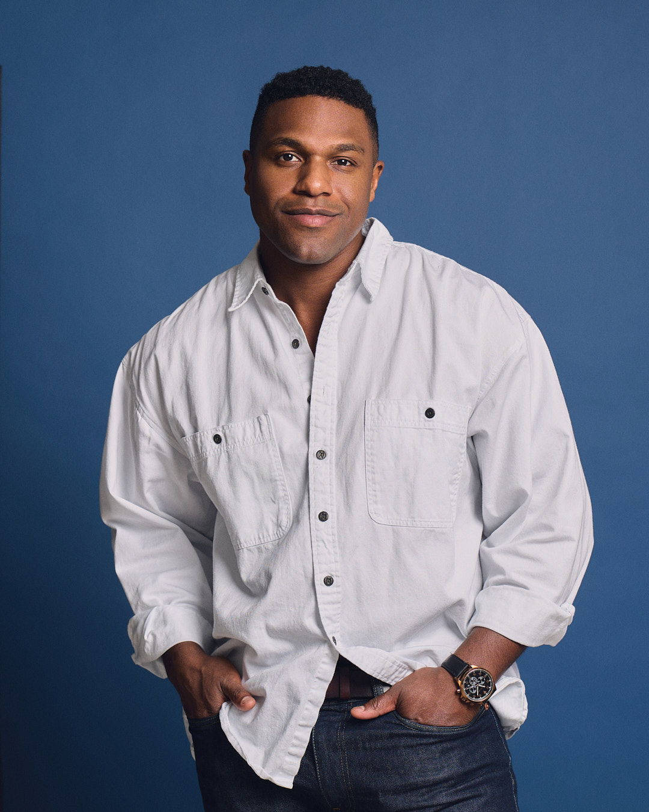

Passport Photo Toronto
The journey of Passport Photo Toronto and founder Julian Ross
Welcome to Passport Photo Toronto (PPT), downtown Toronto's leading professional photo studio specializing in government-compliant passport and ID photos. Located inside Offline Studios at 63 McCaul St, we're a locally owned and operated business founded by Julian Ross, a professional photographer and entrepreneur with over 7 years of full-time working experience.
With a perfect 5-star rating from over 100 Google reviews, we've built our reputation on precision, quality, and exceptional customer service. Our team understands the exact requirements for every type of photo ID, ensuring your documents are processed without delays or rejections. We're also proud to be recommended by BlogTO as one of the top passport photo processors in Toronto and to hold the distinction of ranking #1 in Google search for passport photo services in the Entertainment District.

The founding story of Passport Photo Toronto is a bit different than the typical small business origin. Offline Studios, our parent company, never initially intended to provide passport photo services. The process happened naturally and organically when potential customers began knocking on the doors of Offline Studios asking to have their passport photos taken.
For about a year, these requests were turned away until Julian Ross, the studio's owner and a professional photographer with over 7 years of experience, decided to research the feasibility of offering passport photo services.
At first, the plan was to offer only Canadian passport photo services. However, within days of opening, customers began requesting visa photos for international countries with requirements unknown to the studio. Julian quickly learned these specifications, and since then has personally taken and processed over 1,000 approved passport and visa photos.
You might wonder how Passport Photo Toronto has amassed a perfect 5-star review rating and achieved a #1 ranking on Google search in less than a year. The key to our success lies in Julian's initial research on the passport photo business and his continued commitment to listening to and informing himself of his customers' needs.
In his early research, Julian discovered that some customers complained of feeling rushed by photographers at other services and not being given a chance to review their photos before printing. Julian sought to solve this problem by ensuring customers never feel rushed and always have the opportunity to review and approve their photos before printing.
This customer-first approach, combined with Julian's professional photography expertise, has created a service that consistently exceeds expectations and delivers perfect results every time.

Our studio is housed within Offline Studios, a downtown Toronto photography and creative studio. This professional environment ensures that your passport photos are taken with proper lighting, correct background, and expert composition.
Unlike pharmacy or big-box store photo services, we specialize exclusively in official documentation photography, giving you the confidence that your photos will meet all technical specifications the first time.
With over 1,000 successful passport and visa photos processed, Julian and the team have developed expertise in the specific requirements for every type of official photo, from Canadian passports to international visas.
We stay up-to-date with changing regulations from embassies, consulates, and government agencies worldwide, ensuring your photos will always meet current standards.


We stand behind our work with a 100% acceptance guarantee. If your passport or visa application is rejected due to photo issues, we'll retake your photos at no additional cost. This commitment to quality has earned us our perfect 5-star rating.
Our meticulous attention to detail ensures that every photo meets the exact specifications for size, background, lighting, expression, and positioning required by each specific document type.
Our studio is centrally located at 63 McCaul St in downtown Toronto, easily accessible by public transit and within walking distance of many downtown offices, schools, and residential areas. We're just steps away from OCAD University and a short walk from Queen Street.
With no appointment necessary, you can visit us at your convenience during our business hours, Monday through Saturday from 10:00 AM to 6:00 PM. Most customers are in and out in less than 10 minutes!

At Passport Photo Toronto, we provide photo services for virtually every official document type, including:
Visit our Services page for a complete list of our photo services and pricing.
Over 100 customers have left reviews with an average star rating of 5/5, reflecting our commitment to exceptional service.
Recognized by BlogTO as one of the top passport photo processors in Toronto.
Ranked #1 in Google search for passport photo services in the Entertainment District of downtown Toronto.
Successfully processed over 1,000 approved passport and visa photos since opening.
Experience the difference that professional passport photo services can make. With our expertise, guaranteed acceptance, and convenient downtown location, we make getting perfect passport and ID photos quick, easy, and stress-free.